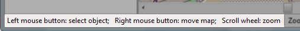

Quick Help Bar
The quick help bar is at the very bottom of the main window.

The quick help bar displays a brief description of how to use the mouse in the map display, and what it does. Check the quick help bar if you are unsure what to do next when doing a command.